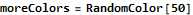

Building a Color Classifier in the Wolfram Language.
In this workbook, we will build a simple color classifier to illustrate the power of machine learning.
There are 2 color types: Dark and Light. We will train a model by providing it with a set of labeled inputs.
Then we will test out the model on some random colors.
First, we create a random sample of dark colors.
Next, we create a random sample of light colors.
Now, we create the training set comprising both sets of light and dark colors.
We build a Naive Bayes Classifier with 2 classes.

Now we create some random colors ...

.. and we test the model on these colors.
Here is some Information about the classifier.